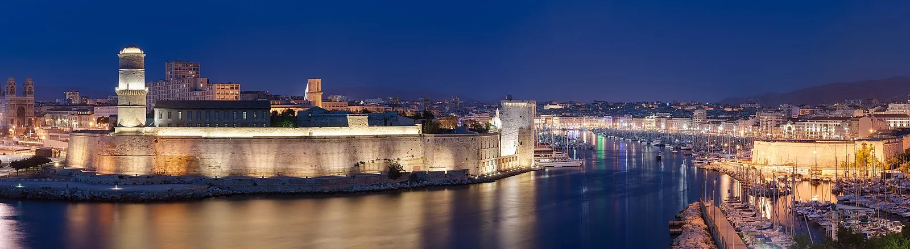
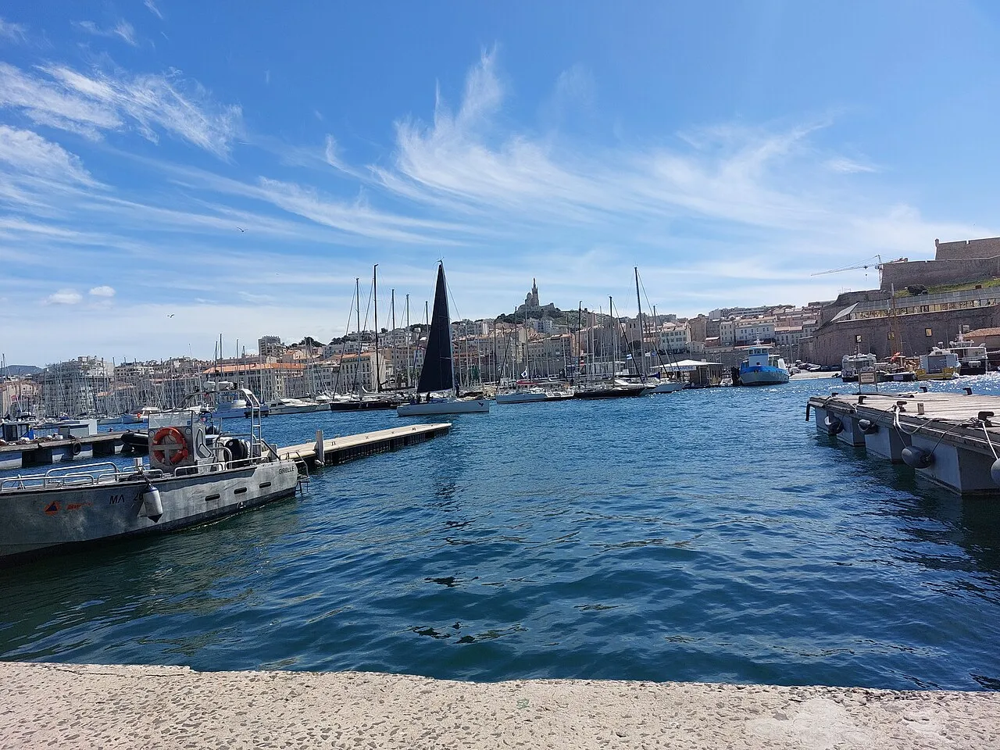
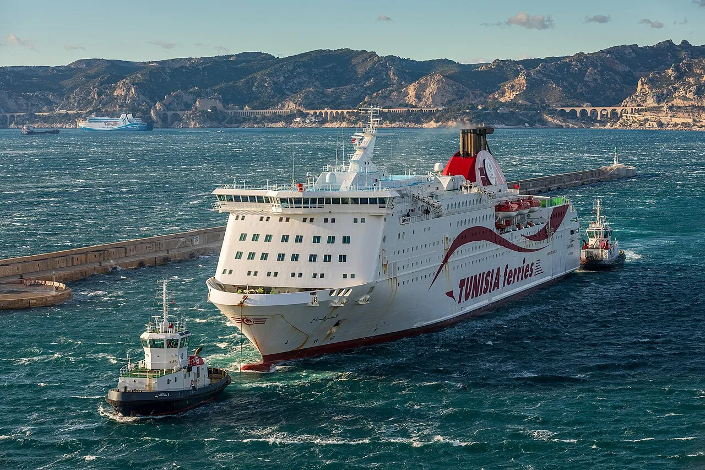
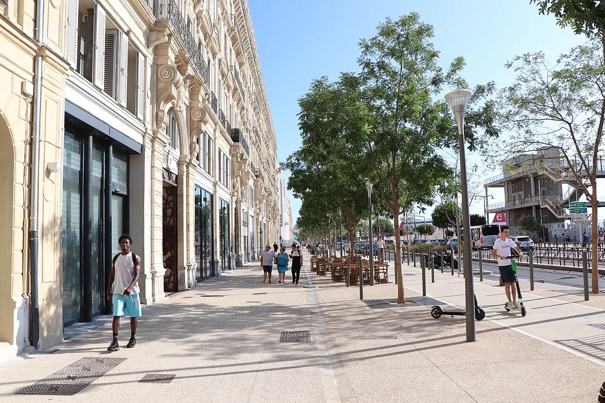
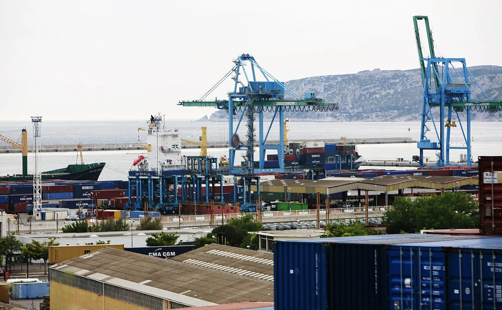
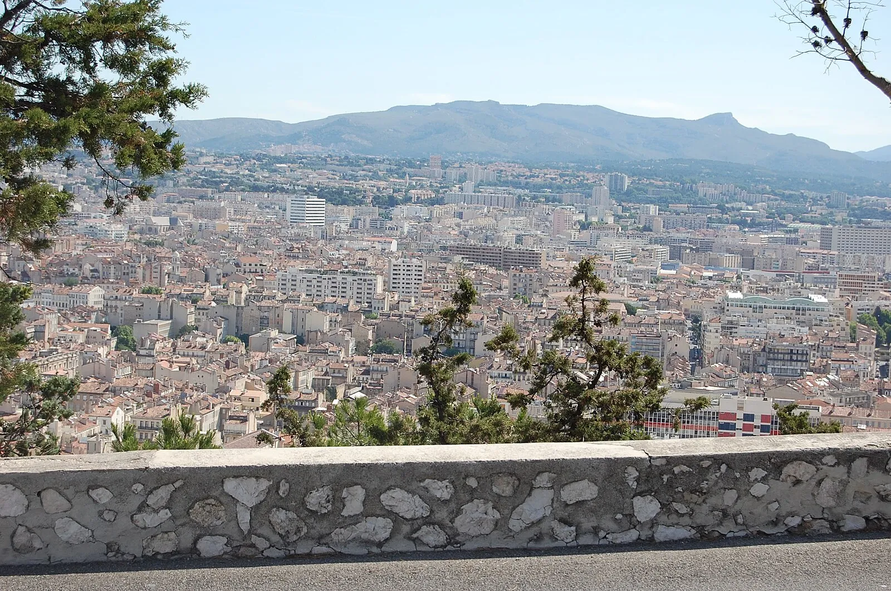
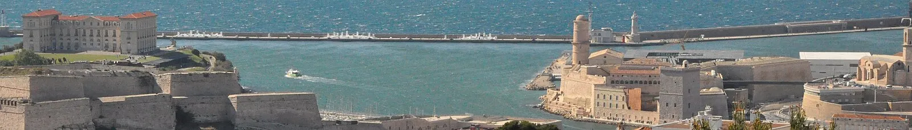
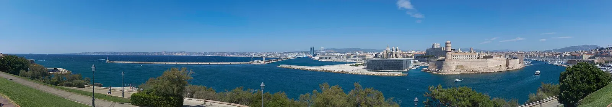

Photo: Wikimedia Commons (CC BY-SA)
Last reviewed: February 2026
Key Facts
- Country
- France
- Region
- Provence-Alpes-Cote d'Azur (Bouches-du-Rhone)
- Port
- Marseille Provence Cruise Terminal
- Currency
- Euro (EUR)
- Language
- French (English spoken in tourist areas)
- Climate
- Mediterranean — warm, dry summers; mild winters with mistral wind
Weather & Best Time to Visit
My Logbook: France's Oldest, Most Authentic City
I stepped off the shuttle bus at the edge of the Vieux-Port on a morning when the mistral wind had scrubbed the sky to a hard, brilliant blue, and the first thing I noticed was the smell — salt and fish and diesel and something sweet drifting from a bakery somewhere behind me. Marseille hit me with all of its contradictions at once: fishing boats bobbing beside luxury yachts, North African spice stalls next to French patisseries, ancient stone rubbing shoulders with modern glass. My ship had docked at one of the modern cruise terminals north of the Old Port, and from the moment I set foot on the quay, I knew this city was different from every other Mediterranean port I had visited.
Marseille is not polished. It does not present itself the way Nice does, with its tidy promenade and pastel facades. It does not perform for visitors the way Paris performs. But there is an honesty to this city that I found deeply moving — a refusal to pretend, a stubborn authenticity that comes from being France's oldest settlement, founded by Greek traders from Phocaea around 600 BC. I walked along the Quai des Belges where fishermen were selling their morning catch — rascasse, congre, Saint-Pierre — and I watched an old woman in a floral dress inspect each fish with the seriousness of a surgeon. This is where bouillabaisse begins, that legendary saffron fish stew that Marseille guards fiercely. I had mine later that afternoon at a small restaurant near Fort Saint-Jean, and it arrived in two courses: the rich, aromatic, rust-colored broth first with croutons and rouille, then the fish arranged on a separate platter. The broth tasted of the sea itself — deep, complex, warming. It cost me €55 and was worth every centime.

From the port I walked up through Le Panier, Marseille's oldest neighbourhood, and my senses were overwhelmed. The narrow streets climbed in switchbacks — stairs, alleys, laundry lines strung between buildings, street art blazing across every surface in colors so vivid they seemed to pulse. I could hear Arabic music floating from an open window, could smell cumin and coriander from a doorway, could feel the rough limestone walls cool beneath my fingertips when I steadied myself on a steep turn. The Germans razed this neighborhood in 1943, calling it a haven for resistance fighters. It was rebuilt, but it kept its soul — a tangle of cultures and centuries that refuses to be tidied up. I found the Centre de la Vieille Charite, a seventeenth-century almshouse now converted to museums, and sat alone in its baroque chapel courtyard. Outside, everything was noise and motion; inside, perfect silence. I whispered a quiet prayer of gratitude for the peace of that moment.
I took the tourist train up to Notre-Dame de la Garde because I am not above such things when the alternative is climbing five hundred feet in Provencal heat. The fare was about €8. The basilica itself is a riot of Byzantine mosaics — gold and azure tiles covering every surface — and ex-voto offerings from sailors saved from shipwrecks line the walls: model ships, paintings of storms at sea, humble inscriptions of thanks stretching back centuries. I stood among those offerings and felt the weight of all those prayers — for safe passage, for return, for one more glimpse of this harbor after months away. Some of those sailors never came home. My heart swelled with something I could not quite name, standing in that space where so much hope and grief had gathered across the generations.
But the real reward at Notre-Dame is the view. Marseille sprawled below me in every direction — the rectangular blue inlet of the Vieux-Port, the white limestone massif of the Calanques stretching east, the islands of Frioul and the Chateau d'If sitting in the harbor like sentinels. That fortress on its rocky island became a state prison in the sixteenth century, and Alexandre Dumas made it immortal as the place where Edmond Dantes was unjustly imprisoned for fourteen years. Ferries run from the Old Port to the island — about €11 round trip, twenty minutes each way — and there is something haunting about standing in those stone cells looking back at the city, so close to freedom yet utterly removed from it.
I spent my last hour at the MuCEM — the Museum of European and Mediterranean Civilizations — which connects to the twelfth-century Fort Saint-Jean by a dramatic footbridge suspended over the sea. The museum's modern architecture is striking: a latticework concrete cube that seems to float above the water, medieval stone on one side and contemporary design on the other. I did not go inside (cruise time is always too short), but I walked the ramparts and stood on that bridge between centuries. It felt like a perfect metaphor for Marseille itself: a city that honors its past without being trapped by it, that builds boldly while standing on foundations laid by Greeks twenty-six centuries ago.
Featured Images
The Cruise Port
Marseille's cruise terminals are located at the Marseille Provence Cruise Terminal complex, situated about two to three kilometers north of the Vieux-Port. Most major cruise lines dock here, including Royal Caribbean, Celebrity, Princess, MSC, and Costa. The terminals are modern and well-equipped with basic amenities, currency exchange, and tourist information desks. Shuttle buses typically run from the terminal to the Old Port area, provided either free or for a small fee by the cruise line. Alternatively, taxis from the terminal to the Vieux-Port cost approximately €10-15.
The port area itself is wheelchair accessible, though the cobblestone streets of the old city and the steep climb to Notre-Dame de la Garde present mobility challenges. Travelers with mobility needs should plan for accessible transport options — the tourist train and taxis can accommodate most needs with advance notice. The Metro system is also accessible and connects major attractions efficiently. Currency is the Euro, and credit cards are widely accepted throughout the city, though smaller vendors and some cafes prefer cash.
Getting Around
Most cruise ships dock at the modern terminals north of the Old Port. From there, multiple transportation options connect you to Marseille's attractions:
- Old Port (Vieux-Port): Shuttle bus from terminal (free or small fee) to the port, approximately 10-15 minutes by bus. From the Old Port, most central attractions are within walking distance. The port area is flat and pedestrian-friendly, making it an ideal starting point for exploration on foot.
- Notre-Dame de la Garde: Tourist train from Old Port (approximately €8), bus number 60, or taxi (€12-15). The walk is steep and challenging in warm weather — I strongly recommend taking transport up and walking down to save energy for the rest of your day.
- Metro System (€1.70 per ticket): Excellent and efficient. A single ticket is valid for one hour of transfers across metro, bus, and tram. Line 1 connects Gare Saint-Charles train station to the Old Port in just a few minutes. Line 2 extends along the coast. Clean, safe, and straightforward to navigate even for first-time visitors.
- Aix-en-Provence (30 km north): Train from Gare Saint-Charles takes approximately 30 minutes and costs around €9. Frequent departures make this an easy independent day trip. You can also book a ship excursion for convenience and guaranteed return to the vessel.
- Calanques: Boat tours depart from Old Port (€20-30 for 2-3 hour tours). Hiking requires advance planning and sturdy shoes. The national park limits daily visitors during peak season, so book ahead.
- Lavender Fields: Only accessible via organized excursion or rental car; typically 1-2 hours from Marseille in the Luberon region. Peak bloom is mid-June to mid-July.
Tip: Purchase a day pass for public transport (€5.20) if you plan multiple trips — it covers unlimited metro, bus, and tram rides and represents excellent value compared to individual fares.
Marseille is grittier than the Riviera ports — that is its charm, not a flaw. The Old Port bouillabaisse restaurants range from tourist traps to genuine (ask where the locals eat, not where the menus are in English). The metro is cheap (€1.70) and gets you everywhere. Notre-Dame de la Garde is worth the climb for views, but take the bus up and walk down.
Marseille Port Map
Interactive map showing cruise terminal and Marseille attractions. Click any marker for details.
Top Excursions & Things to Do
Booking guidance: Ship excursions offer guaranteed return to the vessel but cost more. Independent bookings are cheaper but carry risk of missing all-aboard if transportation delays occur. For distant attractions like Aix-en-Provence or lavender fields, book ahead through ship or a reputable independent operator for peace of mind.
DIY vs. Ship Excursion: Calanques Boat Tour
DIY from Old Port (€20-30/person)
- Shuttle to Old Port (free/small fee), then independent boat tour €20-30
- Multiple operators with 2-3 hour departures throughout the day
- Combine with bouillabaisse lunch at the port afterward
- Flexible — choose your own departure time and operator
Ship Excursion (€70-100/person)
- Transport from terminal to boat included in price
- Guided commentary on geology and history of the Calanques
- Often includes swimming stop in a calanque
- Guaranteed return timing for the ship
Calanques National Park Boat Tour
The Calanques are dramatic limestone fjord-like inlets stretching east of Marseille along twenty kilometers of coastline, now protected as a national park. The water is an impossible turquoise — the kind of blue you expect in the Caribbean, not France — set against sheer white limestone cliffs that plunge straight into the sea. Boat tours depart from the Old Port and typically visit three to five calanques over two to three hours. Cost is €20-30 for independent tours, €70-100 for ship excursions. In the right light, this is the most spectacular scenery in Mediterranean France. Book ahead during peak season as tours fill quickly.
Notre-Dame de la Garde
The golden Madonna atop this Romano-Byzantine basilica has watched over Marseille and its sailors since 1864. The interior dazzles with mosaics and centuries of ex-voto offerings from maritime survivors. The panoramic view from the terrace spans the entire city, the harbor islands, and the Calanques. Tourist train from Old Port costs about €8; bus number 60 is €1.70. Free entry to the basilica itself. Allow 1.5 to 2 hours for the visit including transport.
Chateau d'If (€11 ferry round trip)
The island fortress made famous by Alexandre Dumas in "The Count of Monte Cristo." Ferries depart from the Old Port every 30-45 minutes and take about 20 minutes each way. Entry to the chateau is €6 on top of the ferry fare. Walking through the cells where real prisoners were held — and imagining Edmond Dantes plotting his escape — is genuinely atmospheric. Allow 2-3 hours for the complete round trip and visit.
Aix-en-Provence Day Trip
Cezanne's elegant hometown sits 30 kilometers north of Marseille — the refined counterpart to Marseille's roughness. Plane tree-lined boulevards, fountains on every corner, and cafe culture that rivals Paris. The Cours Mirabeau is one of France's most beautiful streets. Train from Gare Saint-Charles takes about 30 minutes (€9 each way). In summer, you can reach the lavender fields of the Luberon from Aix, though peak bloom is typically mid-June to mid-July. Ship excursion price is €80-120; independent travel by train is far cheaper but requires self-management of time.
MuCEM and Fort Saint-Jean
The Museum of European and Mediterranean Civilizations connects to the twelfth-century Fort Saint-Jean via a dramatic suspended footbridge over the sea. Even if you do not enter the museum (entry €11, free first Sunday of month), the rooftop terrace and fort ramparts offer stunning views and are free to access. Located within walking distance of the Old Port. Allow 1-2 hours.
Le Panier Neighborhood Walk
Marseille's oldest neighborhood is a jumble of narrow streets, street art, North African spice shops, and hidden courtyards. Free to explore on foot from the Old Port. The Centre de la Vieille Charite — a beautifully restored seventeenth-century almshouse with museums — charges €6-12 depending on exhibitions. Allow 1-2 hours for wandering. Moderate walking with some steep sections and stairs.
Food & Dining
Marseille's cuisine reflects its multicultural heritage — French, North African, and Mediterranean flavors blend seamlessly across the city's restaurants and food stalls:
- Bouillabaisse (€40-65/person): The city's signature dish — a rich saffron fish stew served in two courses. Look for restaurants that are part of the Charte de la Bouillabaisse for the authentic preparation. Chez Fonfon and Le Miramar are respected options near the Old Port.
- Navettes de Marseille (€2-4): Boat-shaped biscuits flavored with orange blossom water, baked since 1781 at the Four des Navettes bakery near the Abbaye Saint-Victor.
- North African cuisine (€8-15): Couscous, tagines, and merguez sausages are everywhere in Le Panier and around the Porte d'Aix. Some of the best North African food outside of Africa itself.
- Pastis: The anise-flavored aperitif born in Marseille. Order it at any cafe and watch the clear liquid turn cloudy white when water is added. A small glass costs about €3-5.
Important Notices
- Mistral Wind: This cold, dry northerly wind can appear without warning and drop temperatures significantly. Even in summer, carry a light jacket. In winter, the mistral can reach gale force — check forecasts and dress accordingly.
- Petty Crime: Like any large Mediterranean port city, Marseille has areas with pickpocket activity. Watch bags in crowds and on the Metro. The main tourist areas (Old Port, Le Panier, Notre-Dame de la Garde) are generally safe during the day. Stay aware of your surroundings and keep valuables secured.
- Sundays and Holidays: Many smaller shops and restaurants close on Sundays and French public holidays. The Old Port area and major attractions remain open, but plan accordingly for dining and shopping.
- Currency: Euro is standard. Credit cards widely accepted, though small cafes and vendors in Le Panier sometimes prefer cash. ATMs are readily available throughout the city.
Depth Soundings: Final Thoughts
Marseille is not for everyone, and it does not try to be. It is not refined the way Nice is refined, not elegant the way Paris is elegant, not picturesque the way Santorini is picturesque. But it is real in a way that few Mediterranean cruise ports can match. This is a city where Greeks, Romans, Arabs, Africans, and French have layered their cultures over millennia, and you can feel every one of those layers in the food, the architecture, the language on the streets, and the complicated beauty of a working port that has never stopped working since 600 BC.
The bouillabaisse alone justifies a visit — but so does the view from Notre-Dame de la Garde, the turquoise impossibility of the Calanques, the street art labyrinth of Le Panier, and the haunting silence of the Chateau d'If. Marseille rewards the curious traveler who approaches it with open eyes and a willingness to be surprised. It gave me one of my most profound moments in all my years of cruise travel — that quiet recognition at Notre-Dame that the places which change us most are the honest ones, not the polished ones.
For first-timers, I recommend the Old Port and Notre-Dame de la Garde as essentials, with a Calanques boat tour if time allows. For repeat visitors, the MuCEM's exhibitions, a day trip to Aix-en-Provence, and a deep dive into Le Panier's hidden courtyards reveal layers of this city that a single port call can only begin to uncover. Marseille has given me something new every time I have visited.
Practical Information at a Glance
- Country: France (Bouches-du-Rhone department)
- Language: French (English spoken in tourist areas)
- Currency: Euro (EUR)
- Time Zone: Central European Time (CET / UTC+1)
- Emergency: 112 (European standard)
- Tipping: Service included in French restaurants; small tips (€1-2) for exceptional service appreciated
- Water: Tap water is safe to drink throughout France
- Dress Code: Smart casual for restaurants; comfortable walking shoes essential for cobblestones
- WiFi: Available at cafes, restaurants, and the cruise terminal; many public spaces offer free WiFi
Photo Gallery






Image Credits
- Hero and featured photographs: Wikimedia Commons contributors (CC BY-SA)
- Calanques coastline: Wikimedia Commons contributors (CC BY-SA)
- Notre-Dame de la Garde: Wikimedia Commons contributors (CC BY-SA)
- MuCEM: Wikimedia Commons contributors (CC BY-SA)
Frequently Asked Questions
Q: How far is the cruise port from the Old Port?
A: The modern cruise terminals are about 2-3 km from the Old Port. Ships usually provide shuttle buses, or you can take a taxi (€10-15). The metro does not reach the terminal directly, but shuttles connect you to the system efficiently.
Q: Is bouillabaisse worth the cost?
A: Yes, but only at a reputable restaurant. Authentic bouillabaisse costs €40-65 per person and is meant to be a special meal served in two courses. Look for places that are part of the Charte de la Bouillabaisse — this charter guarantees the traditional preparation method with fresh local fish. Avoid tourist-trap versions that cost less but use frozen ingredients.
Q: Can I visit the Chateau d'If?
A: Yes, ferries run from the Old Port to the island every 30-45 minutes (€11 round trip ferry, plus €6 chateau entry, about 20 minutes each way). It is the famous prison from "The Count of Monte Cristo." Allow 2-3 hours for the complete round trip and visit. The island has limited shade, so bring water and sun protection.
Q: When do the lavender fields bloom?
A: Peak bloom is typically mid-June to mid-July, depending on the year. The fields are 1-2 hours from Marseille in the Luberon and Valensole regions. Harvest usually happens in late July. This is only accessible via organized excursion or rental car from Marseille.
Q: Is Marseille safe for cruise passengers?
A: The main tourist areas — Old Port, Le Panier, Notre-Dame de la Garde, MuCEM — are generally safe during the day. Like any large city, use common sense: watch your belongings in crowds, stay in well-traveled areas, and be alert on the Metro. The city's grittiness is part of its authenticity; approach it with open eyes and appropriate caution.
Q: What is the best way to reach Notre-Dame de la Garde?
A: The tourist train from the Old Port costs about €8 and is the easiest option. Bus number 60 costs €1.70. Taxis charge approximately €12-15. I recommend taking transport up and walking down — the descent offers beautiful views without the exhausting climb. The walk up is steep and can take 30-45 minutes in the heat.